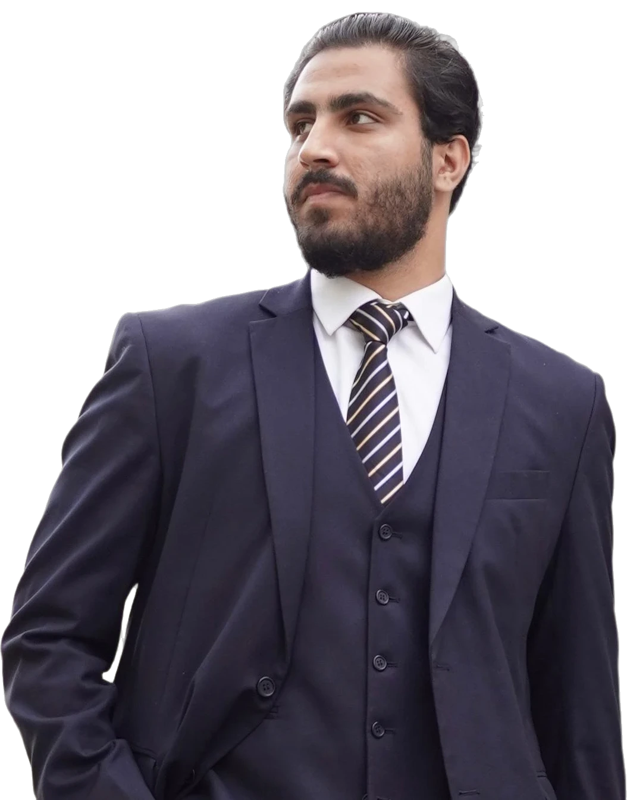
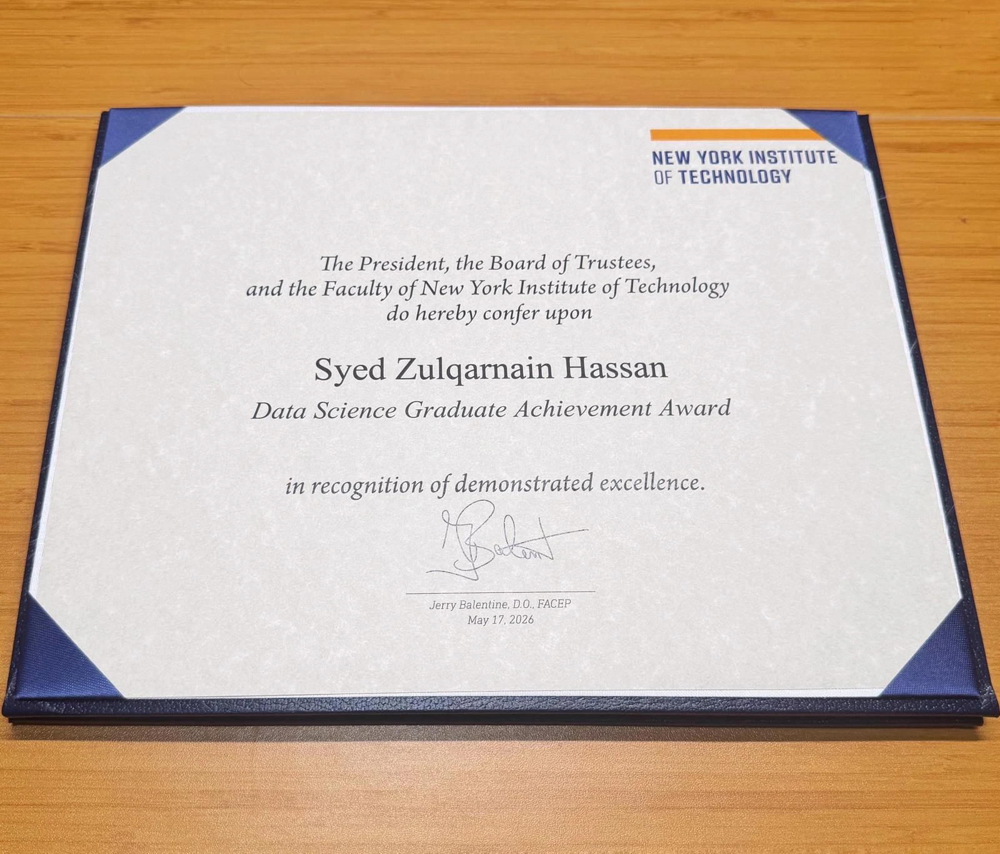
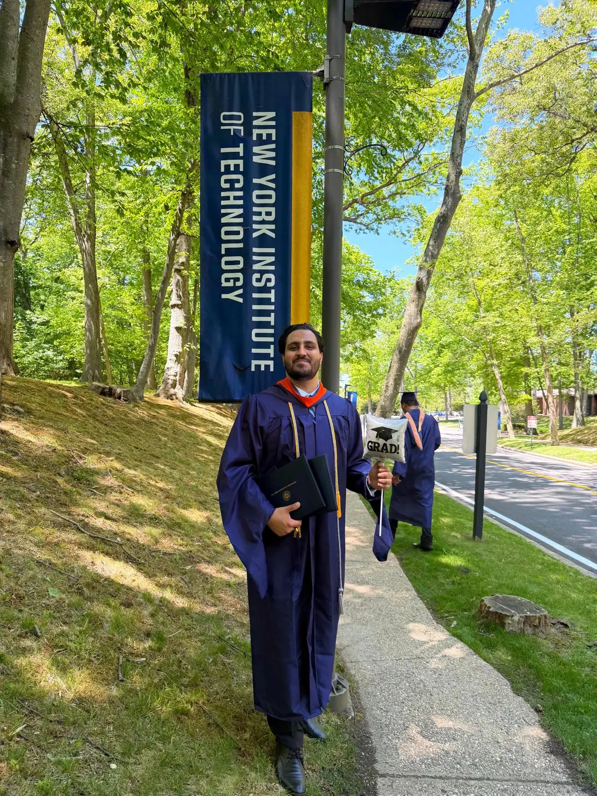
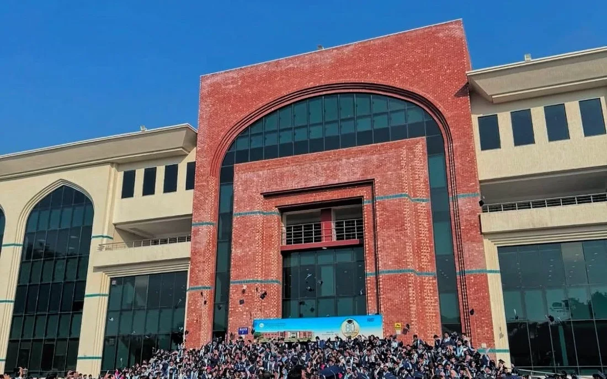

Machine learning & AI
End-to-end ML — EDA and feature engineering through training, evaluation, AWS deployment, and monitoring. Models that survive contact with real data.
See the work →Hey, I'm Zulqarnain.
I build models and the systems that put them to work. I run Altechra, where 40+ production AI/ML and full-stack products have gone out the door, and I finished my MS in Data Science at NYIT (May 2026) with the Graduate Achievement Award — plus the analysis behind a course-scheduling study: 15,242 records, 3,300+ undergraduates.
Open to new opportunities

Graduate Achievement Award · NYIT '26What has actually shipped, newest first. Every line has a receipt.
A few milestones along the way
What I do
Four things I do well — backed by real numbers, not vibes.
End-to-end ML — EDA and feature engineering through training, evaluation, AWS deployment, and monitoring. Models that survive contact with real data.
See the work →Chatbots, semantic search, and agentic pipelines with LangChain and OpenAI — like a medical assistant answering at 94% accuracy.
See MedBot →Insights that move numbers — pricing and sales analysis behind a 15% revenue lift, and automated reporting that cut manual effort by 30%.
See where →Full products through my agency, Altechra — 40+ SaaS platforms, AI integrations, and full-stack builds from discovery to post-launch support.
Meet Altechra →Selected work
Five pieces of work, each written the same way: the problem, what I did, what changed. The numbers are the ones I can stand behind. Where the data is private, the receipt says so.
Graduate Research Assistant, Data Science · Jan 2025 – Jun 2026 · [with Dr. Cecilia Dong — confirm ok to name]
Founder · Apr 2025–present · New York
Personal project · Jun–Sep 2025 · open source since Aug 2026
Personal project · Feb–May 2025
Data & operations analytics · part-time · Aug 2024–present · petroleum wholesale, Brooklyn
Good models are easy. Shipped systems are hard. I've spent the last two years living in both worlds — researching LLMs at NYIT by day, and putting AI into production across 40+ real products.
Stack
Listed only what I have used on shipped work. [A/B testing, causal inference, forecasting, Power BI, MLflow/DVC, SageMaker: add here only after the matching gap project ships — see 04-gap-project-plan]
Founder & CEO
I founded Altechra to bridge clients with world-class engineering talent. We have delivered 40+ products — SaaS platforms, AI systems, fintech and mobile apps — with me leading discovery, architecture, and delivery end to end.
It's where my data science meets the real world: scoping ambiguous problems, managing teams, and being accountable for outcomes, not just models.
About
I'm Syed Zulqarnain Hassan, a data scientist and ML engineer. I finished my MS in Data Science at NYIT in May 2026, where I received the Data Science Graduate Achievement Award at the CoECS Commencement Awards Ceremony and worked as a Graduate Research Assistant on LLM and semantic-search research and a course-scheduling study covering 3,300+ undergraduates.
Alongside school I built Altechra into a shop that has shipped 40+ AI/ML and full-stack products for clients, and I hold Top Rated status on Upwork across 38+ contracts. I also run the data and operations analytics for NSK, a petroleum wholesale business in Brooklyn, part-time.
Away from the keyboard: football (Manchester United, for better or worse), and family. Every milestone on this page belongs to my parents first — they stood up for my education when it wasn't easy.
If a full-time Data Scientist, Data Analyst, Machine Learning Engineer, or AI Engineer role is why you're here: I'm a U.S. citizen, no sponsorship needed, open to any U.S. location — on-site, hybrid, or remote.

Kind words
He'll be the best candidate you ever meet.
I believe he'll be a valuable asset to any team.
Both from my LinkedIn recommendations — full text on my profile.
Education


Contact
A role, a collaboration, or a question about anything on this page — my inbox is open, and email is the fastest way in. No deck required.
zulqarnainhsyed@gmail.com